| 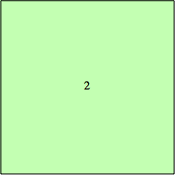 2: 22 + 12 = 5 | 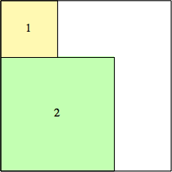 3: 32 + 32 = 18 | 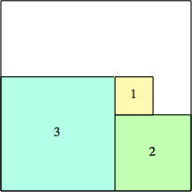 4: 52 + 42 = 41 | 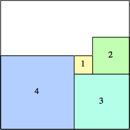 5: 72 + 52 = 74 |
| 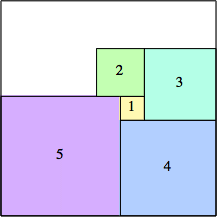 6: 92 + 62 = 117 | 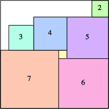 7: 132 = 169 | 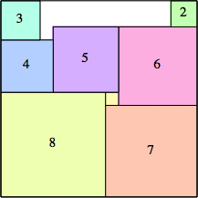 8: 152 = 225 | 9: 152 + 92 = 306 |
| 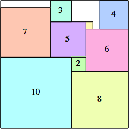 10: 182 + 92 = 405 | 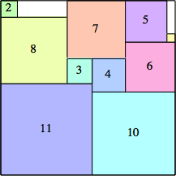 11: 212 + 92 = 522 | 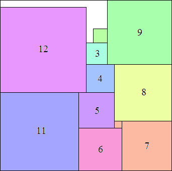 12: 242 + 102 = 676 (MM) | 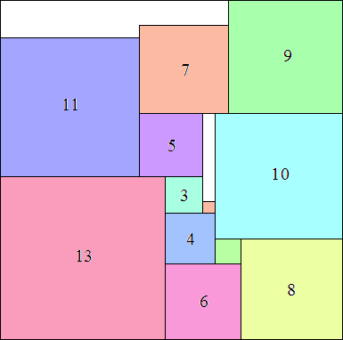 13: 272 + 122 = 873 (MM) |
| 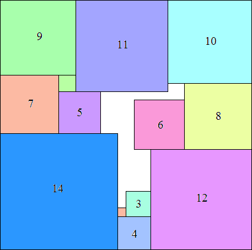 14: 302 + 132 = 1069 (MM) |  15: 332 + 142 = 1285 (MM) | 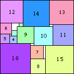 16: 392 = 1521 (MM) | 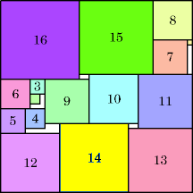 17: 392 + 172 = 1810 (GS) |
| 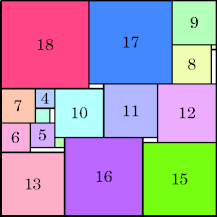 18: 442 + 142 = 2132 (GS) | 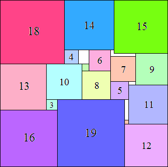 19: 472 + 172 = 2498 (MM) |  20: 512 + 172 = 2890 (MM) | 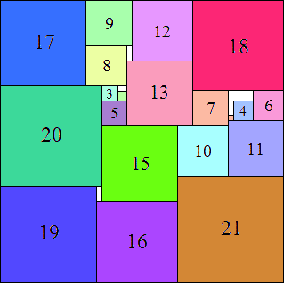 21: 562 + 142 = 3332 (MM) |
| 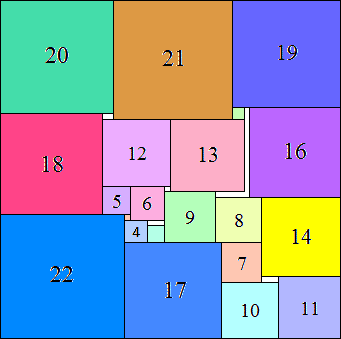 22: 602 + 152 = 3825 (MM) | 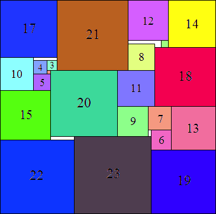 23: 642 + 162 = 4352 (MM) | 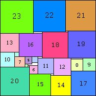 24: 662 + 242 = 4932 (MM) | 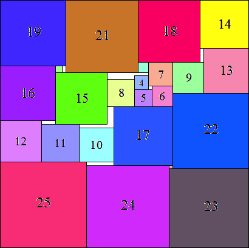 25: 722 + 202 = 5584 (MM) |